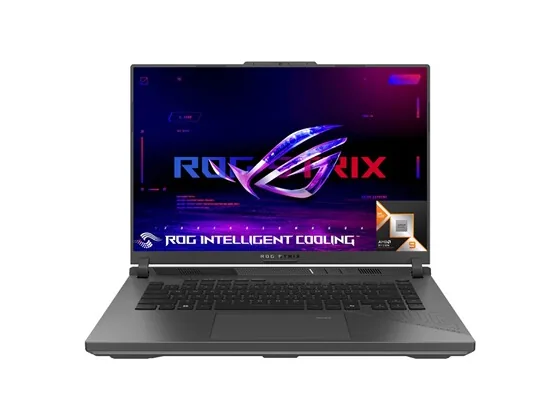
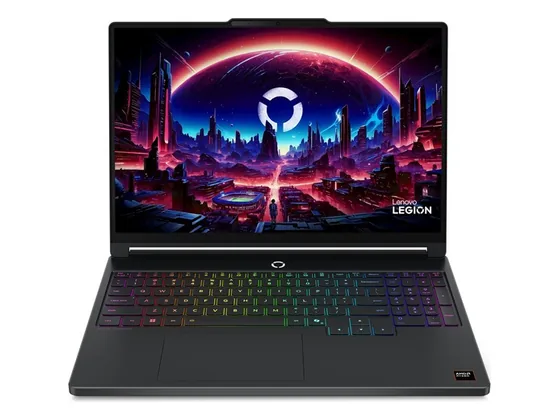
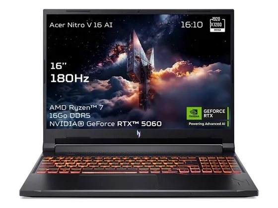
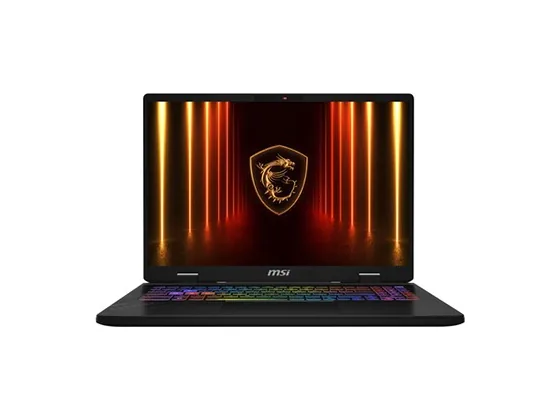

Asus ROG Strix G16 : avis, tests et prix
Le verdict en une phrase. Une machine de jeu très complète, saluée par de nombreux tests : écran rapide, grosses performances, mais châssis plastique et prix élevé.
N° 2 sur 10 dans le top 10 PC portables gaming.

Pour qui ?
Vous voulez une machine de jeu très complète, facile à ouvrir pour la faire évoluer.
Le bruit en charge vous gêne, ou vous attendez un châssis métal à ce prix.
Le consensus de la presse
Sur 14 notes, 12 atteignent ou dépassent 8/10. La plus haute : 10,0/10 (Labo Fnac) ; la plus basse : 6,0/10 (RTINGS).
Où l'acheter
La configuration peut différer d'un marchand à l'autre : vérifiez la fiche avant d'acheter. Liens d'affiliation : ils n'influencent ni les notes ni le classement.
Tous les tests recensés
Chaque ligne renvoie vers le test d'origine. Les notes sont converties sur 10 ; « test » signale un article sans note chiffrée. Notre méthode.
- Labo Fnac10,0
- Windows Central9,0
- Fortress of Solitude8,7
- Notebookcheck8,7
- Clubic8,0
- CowCotLand8,0
- GadgetByte8,0
- GamesRadar8,0
- Geeknetic8,0
- PCWorld8,0
- Pokde8,0
- Tom's Hardware8,0
- IGN7,0
- RTINGS6,0
Source du relevé : Synthèse CommentChoisir.
Les alternatives pour le même usage
Tout le top 10 →
Lenovo Legion 5 15Un écran OLED 165 Hz, un châssis soigné et un prix encore raisonnable : le meilleur rapport qualité-prix des PC gamer de cette génération selon la presse. N° 3 · Le polyvalent du jeu
Acer Nitro V 16 AIUn grand écran rapide et une RTX 5060 dans un châssis sobre : un PC gamer accessible, bien noté par la presse sur cette génération. N° 4 · Le bon élève
MSI Crosshair 16 HX AIÉcran QHD+ 240 Hz et processeur HX : une configuration homogène, régulièrement notée 8/10, pour jouer confortablement en haute définition.Questions fréquentes
Que pense la presse de l'ordinateur Asus ROG Strix G16 ?
La note presse moyenne est de 8,1/10, calculée sur 14 notes (de 6,0 à 10,0/10). Une machine de jeu très complète, saluée par de nombreux tests : écran rapide, grosses performances, mais châssis plastique et prix élevé.
Quels sont les points faibles relevés par les tests ?
Châssis majoritairement plastique ; Bruyant en charge ; Prix élevé.
À qui s'adresse le modèle Asus ROG Strix G16 ?
Vous voulez une machine de jeu très complète, facile à ouvrir pour la faire évoluer. À éviter si : le bruit en charge vous gêne, ou vous attendez un châssis métal à ce prix.
Où l'acheter, et à quel prix ?
Prix relevés le 02/10/2026 : 2 099 € chez Darty. Il est aussi vendu sur Amazon, où le prix se consulte directement. Les prix changent vite et la configuration peut différer d'un marchand à l'autre : seul le prix affiché par le marchand fait foi.